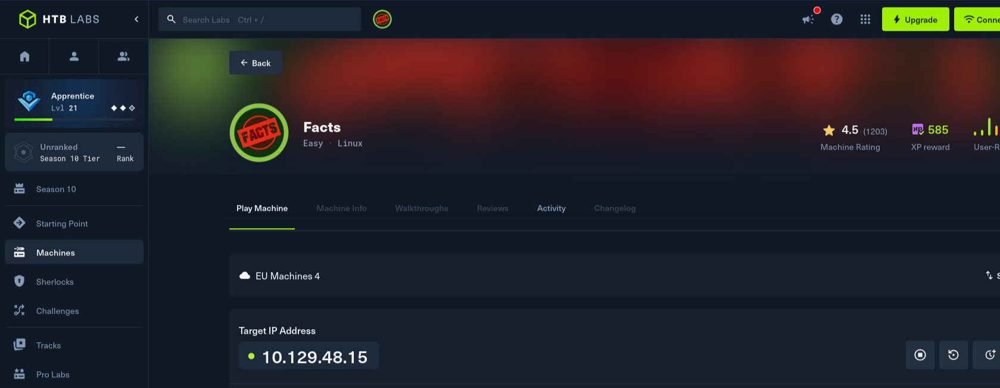
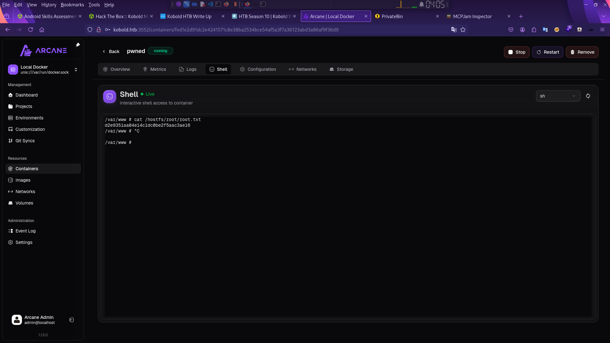
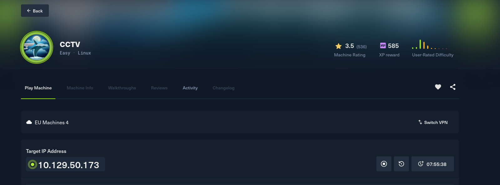
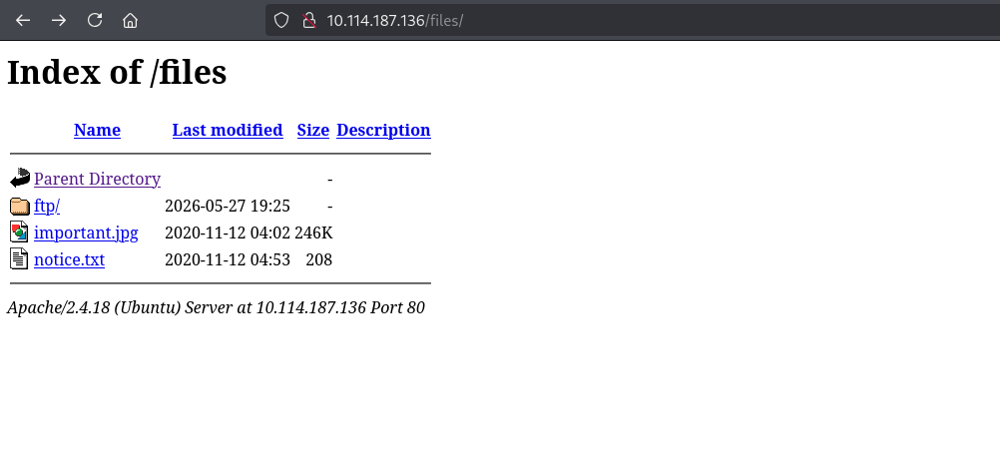
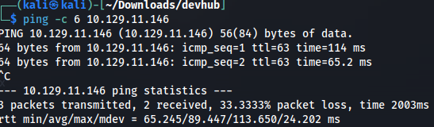

ملف مهني مستقل / مصر
محمد فتحي
CYBERSECURITY / SECURITY ENGINEERINGأمن سيبراني، اختبار اختراق، وأتمتة أمنية
أعمل على تطوير مهاراتي في اختبار الاختراق وأمن تطبيقات الويب والأتمتة الأمنية من خلال مختبرات عملية وتحديات CTF ومشاريع موثّقة. هنا أشارك منهجي في التحليل، والأدوات التي أبنيها، وما أتعلمه من كل تجربة.
المهارات التقنية
اختبار الاختراق والشبكات
مسح الشبكات واكتشاف المنافذ والخدمات وتحليل البروتوكولات وفحص الثغرات.
- Nmap & TShark
- Wireshark
- Burp Suite
- Metasploit Framework
- Gobuster / FFuf
أمن تطبيقات الويب
فهم واكتشاف ثغرات الويب وفق معايير OWASP Top 10 وطرق الحماية والـ APIs.
- SQL Injection (SQLi)
- Cross-Site Scripting (XSS)
- Broken Access Control (IDOR)
- SSRF & Insecure Design
- OWASP API Security
البرمجة والأتمتة
تطوير سكربتات مخصصة لأتمتة مهام الفحص والاستطلاع وخطوط الـ DevSecOps.
- Python Security Scripting
- Bash Recon & Automation
- PowerShell for Pentesting
- Golang Security Tools
- CI/CD Security Pipelines
الأنظمة والمعامل
التعامل مع بيئات التشغيل الأمنية وبناء معامل Active Directory و SOC المنزلية.
- Active Directory Lab
- Linux Hardening & PrivEsc
- Docker & Container Security
- SOC & Wazuh SIEM Lab
- Virtualization & pfSense
CTF Write-ups & Security Reports
سجل متكامل وموثق خطوة بخطوة لاختبار الاختراق، حلول آلات Hack The Box و TryHackMe، وتحليلات الثغرات البرمجية والتحقيق الجنائي الرقمي بالأدلة والأوامر. اضغط على أي مكان في هذه البطاقة لاستعراض كافة التقارير مقسمة حسب كل منصة.
 HTB
16 لقطة
HTB
16 لقطة

HTB 13 لقطة
HTB 7 لقطات
HTB 11 لقطة
THM 3 لقطات
HTB 10 لقطاتالمشاريع والأدوات
PyPort-Scanner Pro
فاحص منافذ متعدد الخيوط (Multi-threaded) بلغة Python يتميز بالسرعة العالية في اكتشاف المنافذ المفتوحة والتقاط البانر (Banner Grabbing) لتحديد نوع الخدمات العاملة مع محاكي ويب فوري.
SubDomain Reckoner
أداة استطلاع وجمع النطاقات الفرعية آلياً من شهادات الأمان (crt.sh) وسجلات DNS العامة وفحص استجابتها مع حفظ النتائج في تقارير مرتبة ومحاكي استكشاف مباشر.
Cyber Defense & SOC HomeLab
بيئة معملية وأداة أتمتة لنشر خوادم Wazuh SIEM ومراقبة حركة البيانات وربط سجلات أحداث Sysmon ومحاكاة هجمات الشبكات مع لوحة تنبيهات تفاعلية.
تواصل معي
يسعدني تواصلك دائماً
سواء كنت تبحث عن استشارة أمنية، ترغب في التعاون في مشروع أو أداة برمجية، أو مناقشة ثغرة تقنية، لا تتردد في مراسلتي.